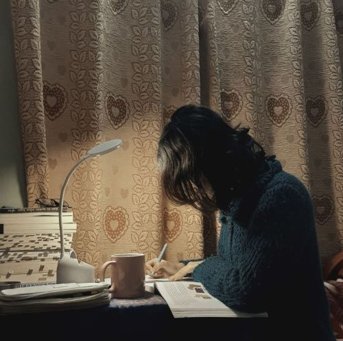

Urvi's Personal Site : What I Do
I’m currently a 9th-grade student, and I spend most of my time learning, questioning and experimenting. School keeps me grounded and engaged, but I always make time to explore creative outlets and dive deeper into things that intrigue me. For me, being a student is a time for growth, self-discovery, and experiences that shape who we are becoming.
I couldn't really find a photo of me studying, so I took help from Pinterest. Enjoy the aesthetic picture!